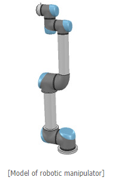
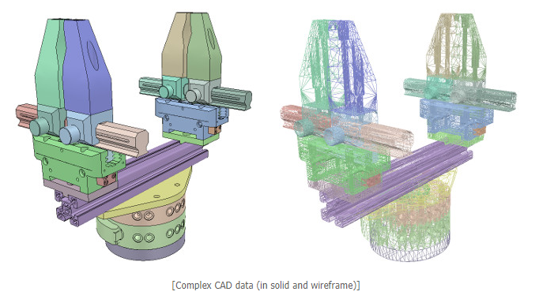
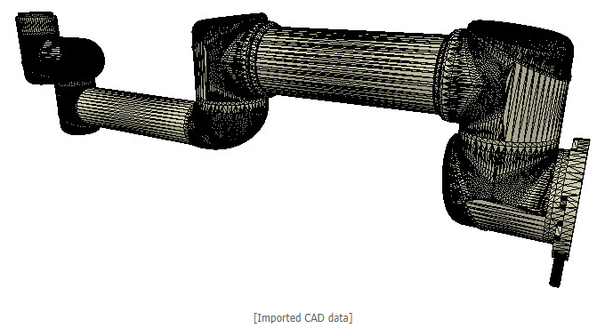

week10~14 <<
Previous Next >> note
week15~18
week15
簡介自己倉儲
week16
solvespace導入webot
solvespace導入vrep
week17
繪製solvespace 各個零件檔1.桿子2.車體3.輪子
導入檔案至VREP(以下檔案)
https://github.com/mdecourse/cad2019/tree/master/downloads/solvespace/curiosity/
以下為17周任務影片(有字幕)
翻譯資料: http://www.coppeliarobotics.com/helpFiles/en/buildingAModelTutorial.htm
This tutorial will guide you step-by-step into building a clean simulation model, of a robot, or any other item.
本教程將指導您逐步構建機器人或任何其他項目的清晰仿真模型。
To illustrate the model building process, we will be building following manipulator:
為了說明模型的構建過程，我們將構建以下操縱器：

Building the visible shapes
When building a new model, first, we handle only the visual aspect of it: the dynamic aspect (its undelying even more simplified/optimized model), joints, sensors, etc. will be handled at a later stage.
建立可見的形狀
在構建新模型時，首先，我們僅處理它的視覺方面：動態方面（其簡化，優化模型的不合理之處），關節，傳感器等將在以後階段進行處理。
Primitive shapes will be simple meshes, which might not contain enough details or geometric accuracy for our application. Our other option in that case would be to import a mesh from an external application. importing CAD data from an external application.
基本形狀將是簡單的網格，對於我們的應用程序，可能沒有足夠的細節或幾何精度。 在這種情況下，我們的另一個選擇是從外部應用程序導入網格。從外部應用程序導入CAD數據。

Above CAD data is very heavy: it contains many triangles (more than 47'000)。 In that case, a simulation scene can quickly become too slow.Generally, we recommend to model a robot with no more than a total of 20'000 triangles, but most of the time 5'000-10'000 triangles would just do fine as well. Remember: less is better, in almost every aspect.
上面的CAD數據非常重：它包含許多三角形（超過47'000個）。。 在這種情況下，模擬場景可能很快變得太慢。通常，我們建議對不超過2萬個三角形的機器人進行建模，但是在大多數情況下，5 000至10 000個三角形也可以。 記住：在幾乎所有方面，少即是好。
So, if possible, try to remove all the holes, screws, the inside of objects, etc. from your original model data. If you have the original model data represented as parametric surfaces/objects, then it is most of the time a simple matter of selecting the items and deleting them
因此，如果可能，請嘗試從原始模型數據中刪除所有的孔，螺釘，物體的內部等。如果您將原始模型數據表示為參數化曲面/對象，則通常在大多數情況下只需選擇並刪除它們即可
You can notice that the whole robot was imported as a single mesh. We will see later how to divide it appropriately. Notice also the wrong orientation of the imported mesh: best is to keep the orientation as it is

您會注意到整個機器人是作為單個網格導入的。稍後我們將看到如何對其進行適當劃分。還要注意導入的網格的方向錯誤：最好保持其方向不變，直到構建整個模型為止
At this stage, we have several functions at our disposal, to simplify the mesh:
1.Automatic mesh division
2.Extract the convex hull
3.Decimate the mesh:
在此階段，我們可以使用多種功能來簡化網格：
1.自動網格劃分2.提取凸包3.刪除網格的內部
week18
期末報告
week10~14 <<
Previous Next >> note